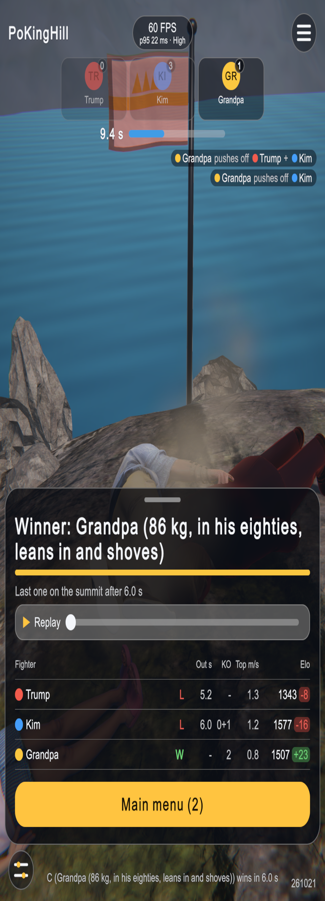
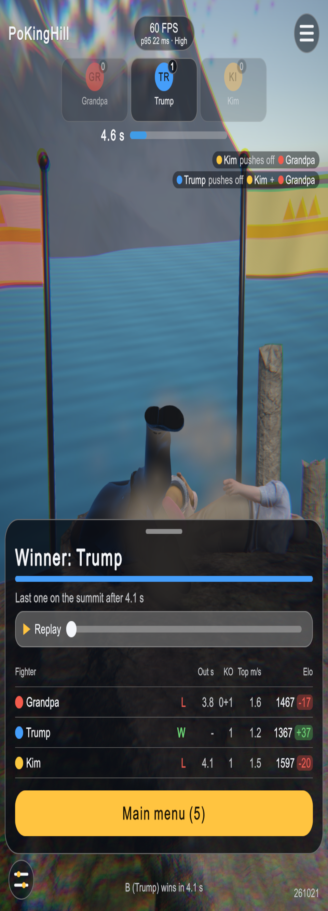
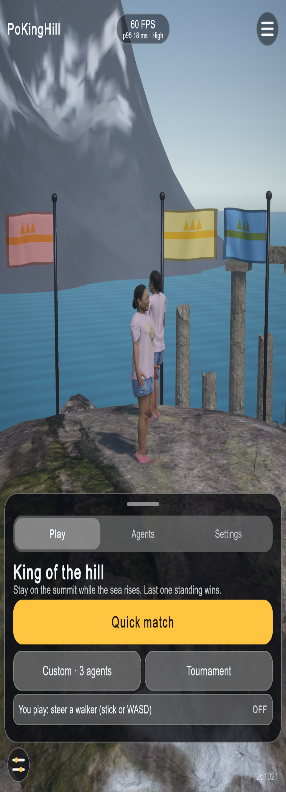
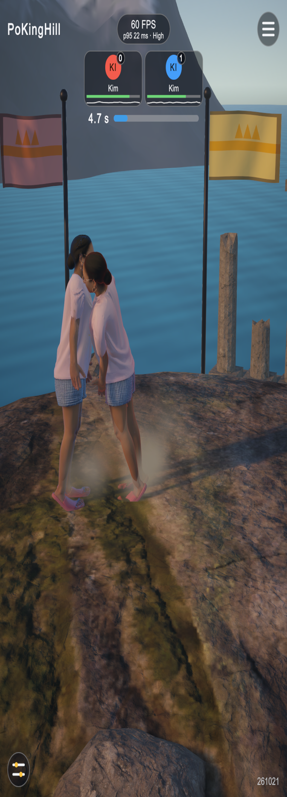
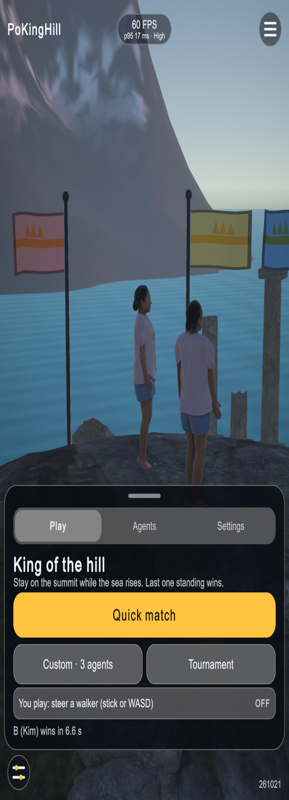
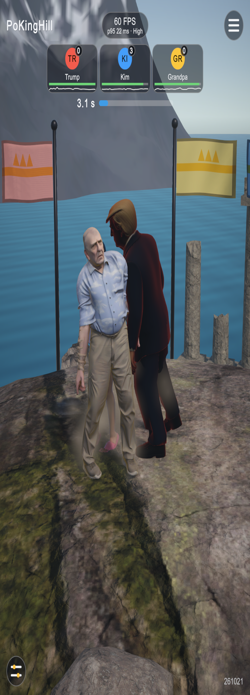
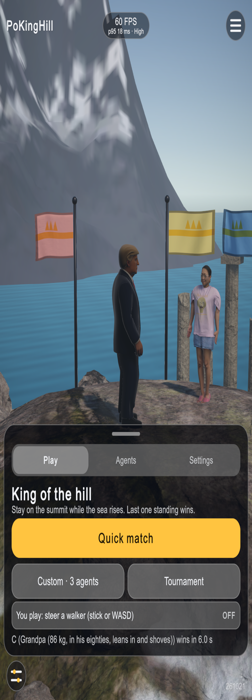

Play test, 2026-10-21
Demo_duel rebuilt with the human get-up brains, played in the editor; one HUD text fix.
Fix: result names
The round result used the roster's full description as the winner's name. It now uses the badge name
(DemoDirector.BadgeOf), as the badges and the result table already did.

full description as name
"C (Grandpa (86 kg, ...))"

badge name
"B (Trump)"
Get-up gates (200 drops, Unity vs CPU MuJoCo)
| Body | Python: up within 5 s, median (p25 / p75) | Unity | Verdict |
|---|---|---|---|
| Kim | 100 %, 1.76 s (1.66 / 2.10) | 99 %, 1.70 s (1.60 / 2.06) | pass |
| Trump | 99.5 %, 2.48 s (2.30 / 2.97) | 96.5 %, 2.40 s (2.18 / 2.79) | borderline (share ~2 SE low) |
| Grandpa | 100 %, 2.88 s (2.74 / 3.22) | 98.5 %, 2.87 s (2.69 / 3.18) | pass |
What was played





Tests
EditMode 54/54, PlayMode 7/7 (match flow, HUD layout on three phones, 300-tap soak). No errors in the editor log during play.